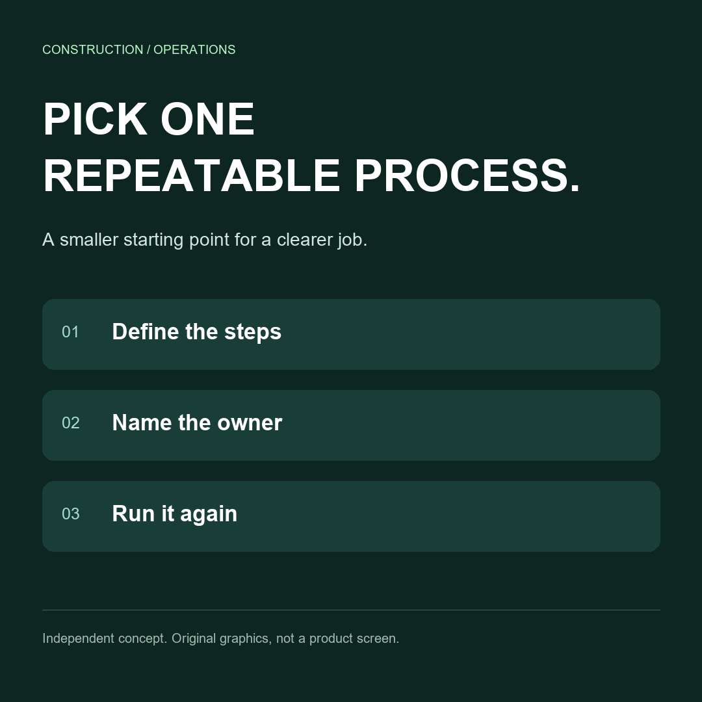

01Process
Pick one repeated process
Before you document everything, choose one process that keeps coming back. A project handoff. A material order. A closeout check.
Write the steps and name the owner. Try the sequence on one job, then review what still needed explanation.
Subtrak supports reusable processes with tasks, responsibility and timing. Which repeated process would you start with?
Instagram and Facebook
One repeated process is enough to begin. Write the steps, name the owner and review what the team needs next.
Which handoff keeps creating follow-up for your team?